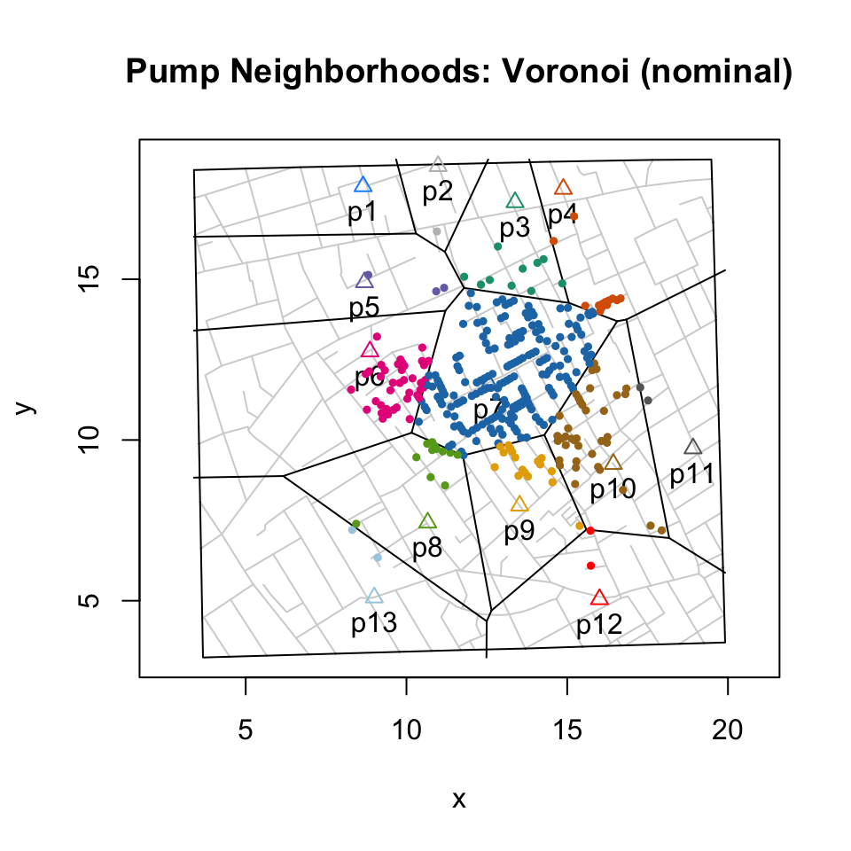
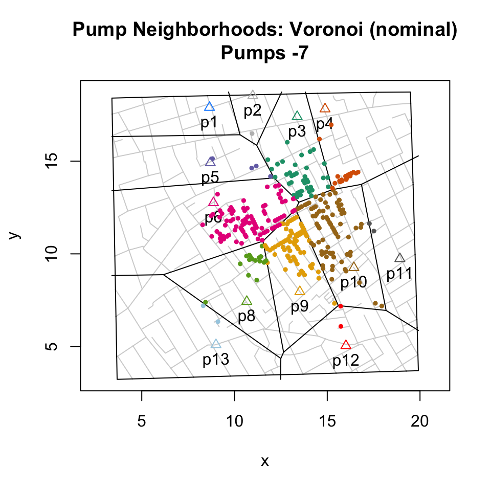
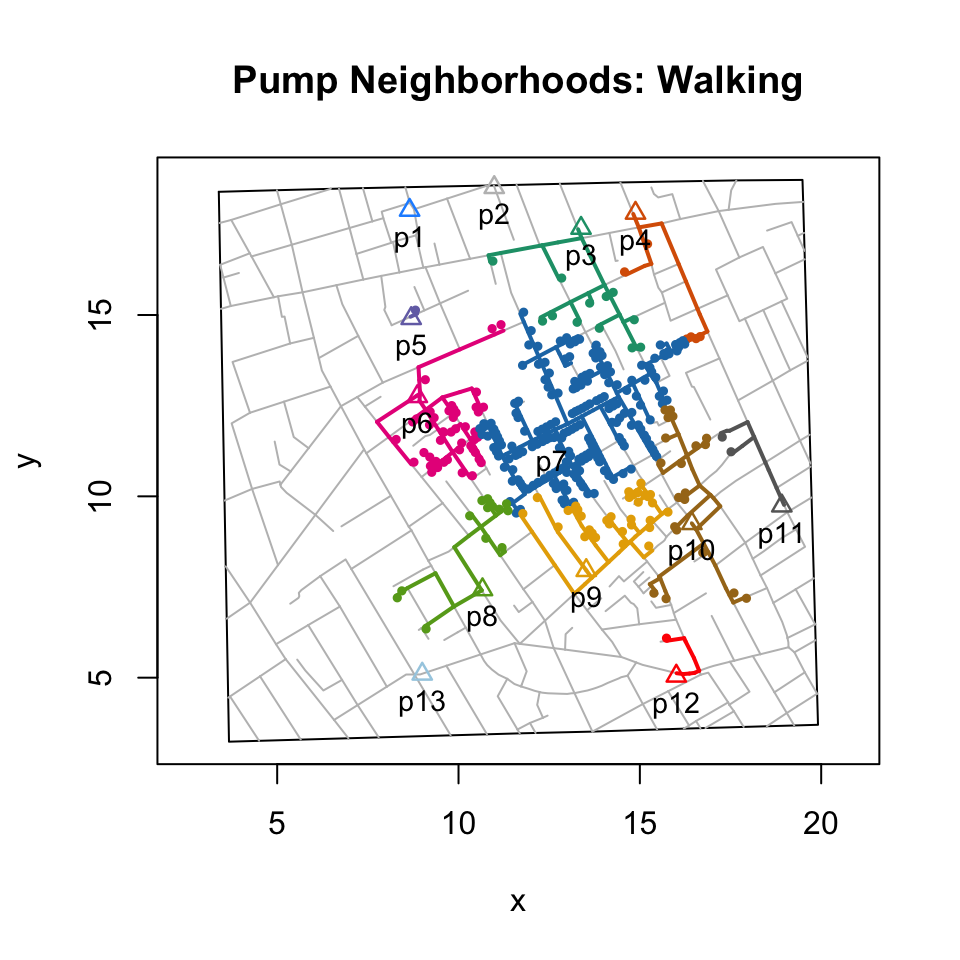
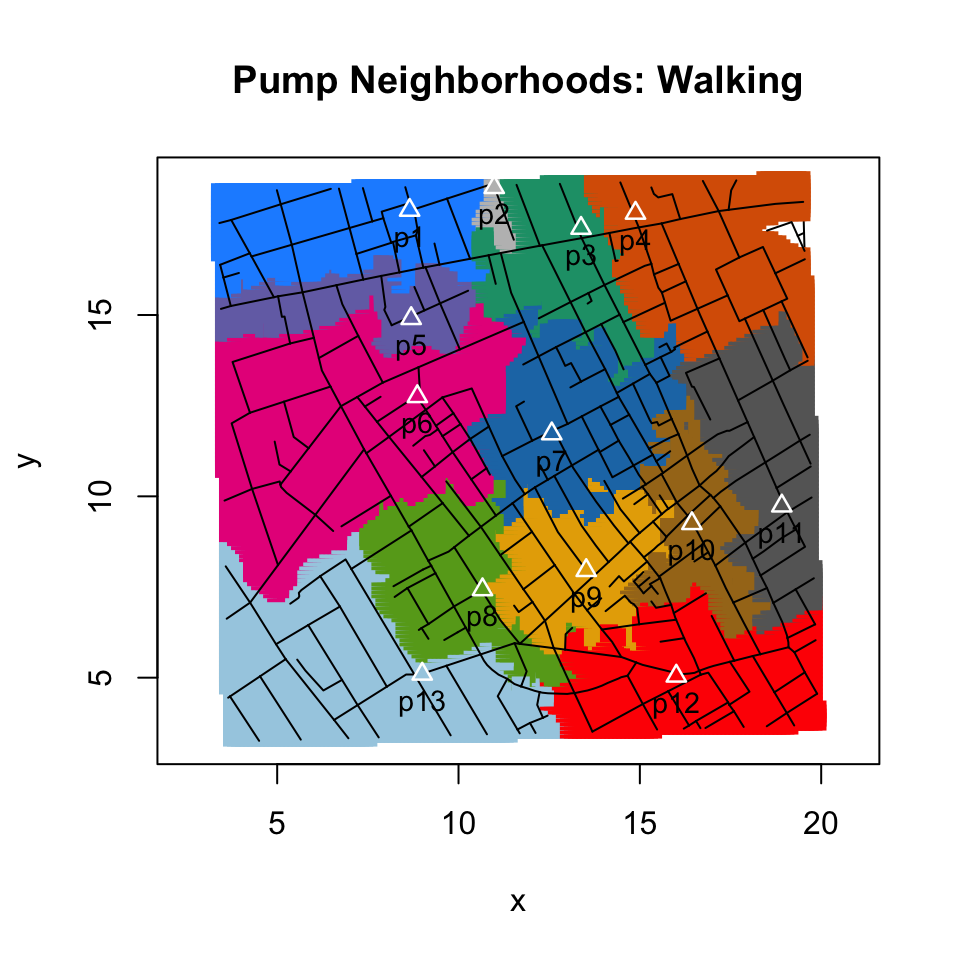
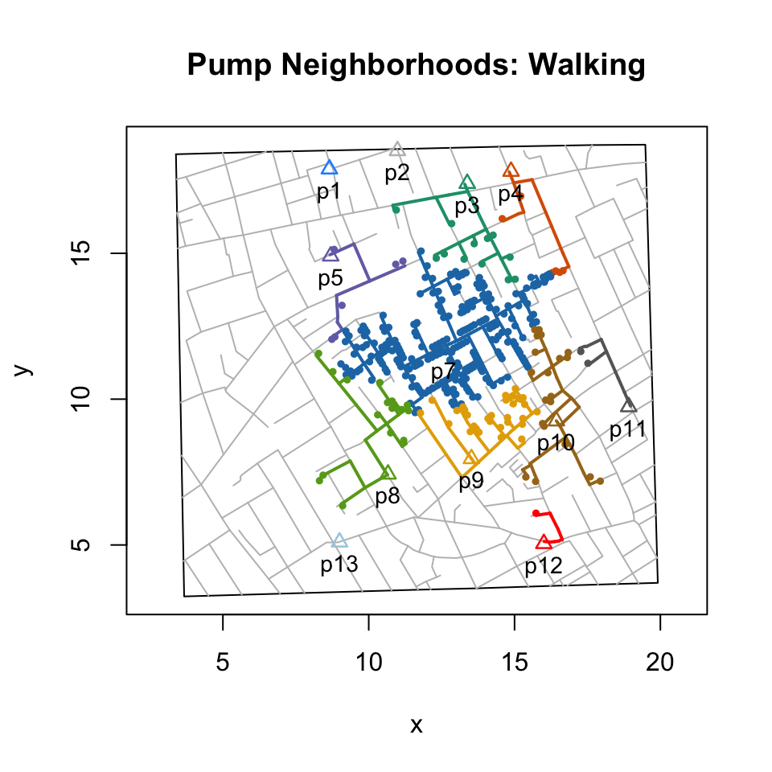

Pump Neighborhoods
lindbrook
2019-01-04
Source:vignettes/pump.neighborhoods.Rmd
pump.neighborhoods.RmdOverview
John Snow published two versions of the cholera map. The first, which appeared in On The Mode Of Communication Of Cholera (Snow 1855a), is more famous. The second, which appeared in the Report On The Cholera Outbreak In The Parish Of St. James, Westminster, During The Autumn Of 1854 (Snow 1855b), is more important. What makes it so is that Snow adds a graphical annotation that outlines the neighborhood around the Broad Street pump, the set of addresses that he contends is most likely to use the pump:

By identifying the pump’s neighborhood, Snow sets limits on where we should and where we should not find fatalities. Ideally, this would help support his claims that cholera is a waterborne disease and that the Broad Street pump is the source of the outbreak. Looking at the second map Snow writes: “it will be observed that the deaths either very much diminish, or cease altogether, at every point where it becomes decidedly nearer to send to another pump than to the one in Broad street” (Snow 1855b, 109).
To help assess whether the map supports Snow’s arguments, I provide functions that allow you to analyze and visualize two flavors of pump neighborhoods: Voronoi tessellation, which is based on the Euclidean distance between pumps, and walking distance, which is based on the paths traveled along the network of roads. In either case, the guiding principle is the same. All else being equal, people will choose the closest pump.
Voronoi tessellation
Cliff and Haggett (1988) appear to be the first to use Voronoi tessellation1 to compute pump neighborhoods. In their digitization of Snow’s map, Dodson and Tobler (1992) include coordinates for 13 Voronoi cells. These are available in HistData::Snow.polygons. To replicate that effort, I use deldir::deldir(). With the exception of the border between the neighborhoods of the Market Place and the Adam and Eve Court pumps (pumps #1 and #2), I find that Dodson and Tobler’s computation are otherwise identical to those using the ‘deldir’ package.
To explore the data using this approach, you can use neighborhoodVoronoi() to create scenarios of different sets neighborhoods based on the pumps you select. The figure below plots the 321 fatality “addresses” and the Voronoi cells for the 13 pumps in the original map.

The next figure below plots the same data but excludes consideration of the Broad Street pump.
plot(neighborhoodVoronoi(-7))
In either case, the numerical results can be summarized using the print() method. Note that “Pearson” is “Count” minus “Expected” divided by the square root of “Expected”:
# print(neighborhoodVoronoi()) or
neighborhoodVoronoi()## [1] 0 1 10 13 3 39 182 12 17 38 2 2 2Walking distance
The obvious criticism against using Voronoi tessellation to analyze Snow’s map is that the neighborhoods it describes are based solely on the Euclidean distance between water pumps. Roads and buildings don’t matter. In this version of the world, people walk to water pumps in perfectly straight lines rather than along the twists and turns of paths created by roads and streets.
Not only is this unrealistic, it’s also contrary to how Snow thought about the problem. Snow’s graphical annotation appears to be based on a computation of walking distance. He writes: “The inner dotted line on the map shews [sic] the various points which have been found by careful measurement to be at an equal distance by the nearest road from the pump in Broad Street and the surrounding pumps …” (Report On The Cholera Outbreak In The Parish Of St. James, Westminster, During The Autumn Of 1854, p. 109.).
While the details of his computations seem to be lost to history, I replicate and extend his efforts by writing functions that allow you to compute and visualize pump neighborhoods based on walking distance.2 My implementation works by transforming the roads on the map into a network graph and turning the computation of walking distance into a graph theory problem. For each case (observed or simulated), I compute the shortest path, weighted by the length of roads, to the nearest pump. Then, by drawing the unique paths for all cases, a pump’s neighborhood emerges:

The summary results are:
# print(neighborhoodWalking()) or
neighborhoodWalking()## 3 4 5 6 7 8 9 10 11 12
## 12 6 1 44 189 14 32 20 2 1“Expected” walking neighborhoods
To get a sense of the full extent of a walking neighborhood, I apply the approach above to use “expected” or simulated data. Using sp::spsample() and sp::Polygon(), I place 20,000 regularly spaced points, which lie approximately 6 meters apart, unitMeter(dist(regular.cases[1:2, ])), across the map and essentially compute the shortest path to the nearest pump.3
I visualize the results in two ways. In the first, I identify neighborhoods by coloring roads.4
plot(neighborhoodWalking(case.set = "expected"))
In the second, I identify neighborhoods by coloring regions using points or polygons.5 The points approach, shown below, is faster and more robust.
plot(neighborhoodWalking(case.set = "expected"), type = "area.points")
Exploring scenarios
Beyond comparing methods (e.g., walking v. Euclidean distance), this package also allows you to explore different scenarios. For example, Snow argues that residents found the water from the Carnaby and Little Marlborough Street pump (#6) to be of low quality and actually preferred to go to the Broad Street pump (#7).6 Using this package, you can explore this by selecting or excluding pumps:
plot(neighborhoodWalking(-6))
Note on neighborhoodWalking()
neighborhoodWalking() is computationally intensive. Using R version 3.5.1 on a single core of a 2.3 GHz Intel i7, plotting observed paths to PDF takes about 5 seconds; doing the same for expected paths takes about 28 seconds. Using the functions’ parallel implementation on 4 physical (8 logical) cores, the times fall to about 4 and 11 seconds.
Note that parallelization is currently only available on Linux and Mac.
Also, note that although some precautions are taken in R.app on macOS, the developers of the ‘parallel’ package, which neighborhoodWalking() uses, strongly discourage against using parallelization within a GUI or embedded environment. See vignette("parallel") for details.
The computation of walking distance is by no means new (see Shiode, 2012). Another approach is to use GIS. For applications that don’t need to consider the actual historic walking distances, this layers-based approach, which typically relies on current maps, may be sufficient: e.g., https://www.theguardian.com/news/datablog/2013/mar/15/john-snow-cholera-map. To reconstruct the roads represented on Snow’s map, one might also consider John Mackenzie’ approach at https://www1.udel.edu/johnmack/frec682/cholera/cholera2.html.↩
These data are found in
regular.cases.↩Shiode (2012) uses this approach.↩
Mackenzie (N.D) uses this area plot approach. Cliff and Haggett produce an adjusted Voronoi cells that reflect walking distances: “So far we have assumed that access to each pump was determined by ‘as-the-crow-flies’ distances. While the physical effort of carrying water mean that most people visited their nearest pump, recognition must be made of the complex street pattern in this area of London. Therefore in (D), the Thiessen polygons have been adjusted to take into account the patterns of access made possible by the street system shown in diagram (A)” (Cliff and Haggett 1988, 53). However, details about how this was done don’t appear to be available. Moreover, because the graphic only shows the outline of the polygon and not the streets, comparisons with other approaches is difficult.↩
Snow writes: “It requires to be stated that the water of the pump in Marlborough Street, at the end of Carnaby Street, was so impure that many persons avoided using it; and I found that the persons who died near this pump, in the beginning of September, had water from the Broad Street pump.”↩